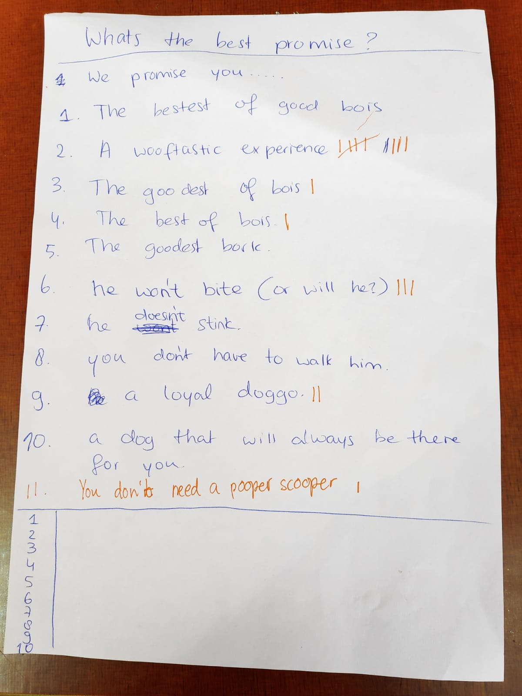
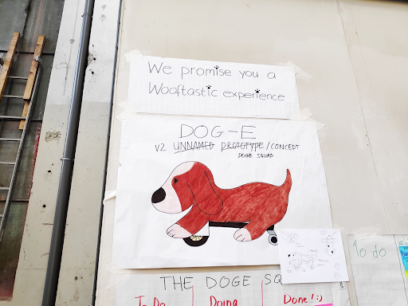
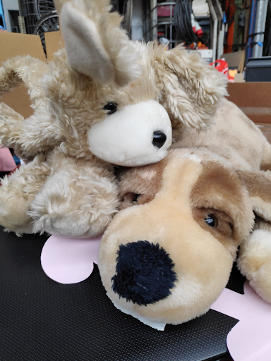
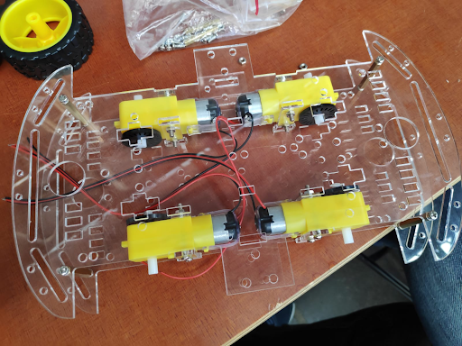
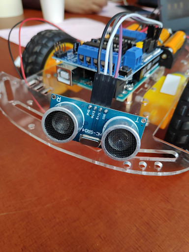

Lab Weeks - Dag 4
Aan het begin van dag 4 werd er bij de briefing uitgelegd dat er een belofte moest komen. De belofte moest iets worden wat met je project te maken heeft. Uiteindelijk hebben we ook hier weer een lijst van gemaakt. Die lijst hebben we rond laten gaan om te zien welke er als beste werd ervaren, net als bij de naam van onze robot hond.
A wooftastic experience kwam al snel als beste uit de test. Toch waren er wel een aantal andere dingen die we mee konden nemen. Bijvoorbeeld ‘a dog that will always be there for you’ en ‘he wont bite’ en ‘a loyal doggo’. Ons werd aangeraden om dit mee te nemen als features, in plaats van als belofte. Uiteindelijk moest de promise op een banner. Die heb ik opgehangen boven de poster. Zie onderstaande afbeelding.
We hadden vandaag ook een aantal knuffels mee. Uiteindelijk is het idee dat we het alles monteren op het autotje, en dat je alle elektronica niet ziet omdat de knuffel er omheen zit.
Daarnaast zijn we op dag 4 begonnen met het omzetten van het gehele project van de auto met 2 wielen + trailing wheel, naar een auto met 4 wielen. We hebben hiervoor gekozen omdat het in de praktijk lastig bleek om de auto rechtuit te laten rijden. We hadden het vermoeden dat het een verbetering zou zijn als we 4 wielen zouden gebruiken omdat er om ons heen ook veel mensen waren met een auto met 4 wielen. Die reden een stuk rechter dan die van ons. De keuze was dus al snel gemaakt. Hieronder zien we het chassis van de auto. De 4 servo motoren zitten al vast. De kleine zwarte wielen aan de binnenkant kun je hier goed zien. Die willen we gebruiken om er voor te zorgen dat de auto nog rechter rijdt, door sensoren te gebruiken. Omdat de echte wielen en deze kleine zwarte wielen aan dezelfde aandrijfas zitten draaien ze evenveel, hierdoor kun je dus dezelfde output meten. Als je output kunt meten kun je ook zien of alles goed verloopt en kun je uiteindelijk dus ook aanpassingen maken.

Ook hebben we vandaag de proximity sensor gemonteerd. Zie bovenstaande afbeelding. De sensor hebben we ook al gebonden aan de software, hierdoor hebben we dus een nieuwe vorm van input. Door gebruik te maken van deze sensor kunnen we ervoor zorgen dat de auto niet overal tegenaan rijdt.